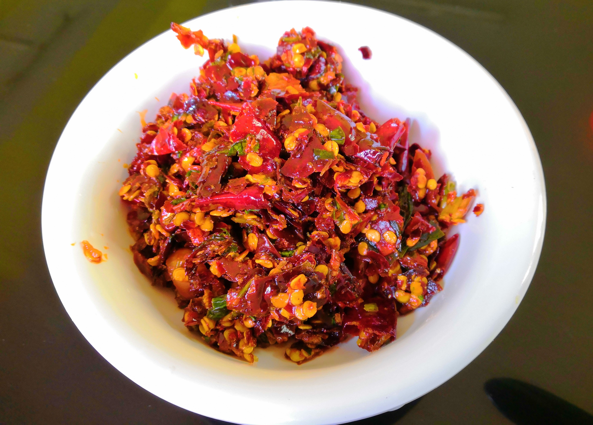

Procedure
- Slightly parch the red chillies on the stove and put it in a container.
- Wash the coriander and then cut it into pieces with the help of a scissor. Put it in the same container.
- Cut the red chillies into small pieces with a scissor and put it in the same container.
- Heat 150 ml of oil in a pan.
- Crumble the local cheese in the container and add the hot oil.
- Mix it thoroughly with your hands or a spoon.
- Add salt and mix it again.
- Ezay is ready to be served
Ingredients
- Dried red chillies
- Coriander
- Local cheese (cottage cheese)
- Oil